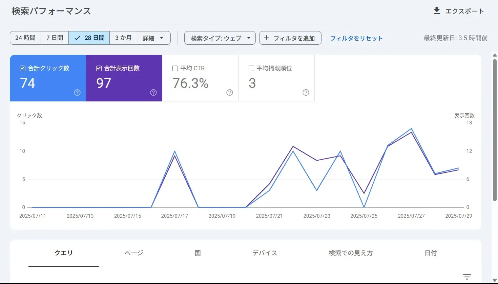
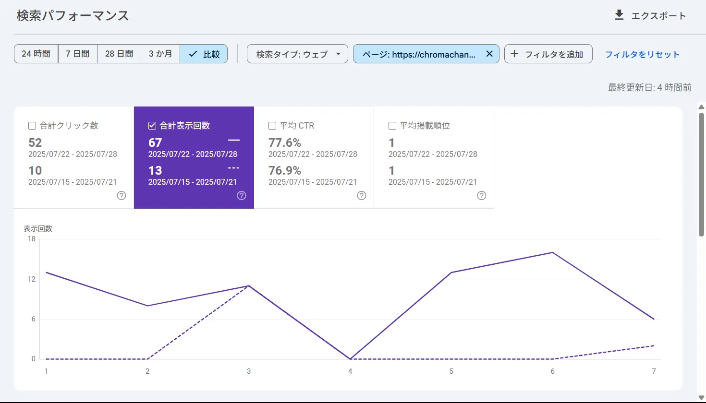

「こんにちは、福祉×AIクリエイターの山本です。
このサイトをご覧になって、「これだけのものを、本当に一人で作っているの？」と感じてくださった方がいるかもしれません。もしそうなら、私の答えは「いいえ、一人ではありません」です。」
実は、このサイト制作の陰には、24時間365日、文句も言わずに私の無茶振りに付き合ってくれる、もう一人の"相棒"がいます。それが、AIなのです。
今回は、私がAIを単なる『効率化ツール』としてではなく、『共同制作者』として、どのようにこのサイトを作り上げているのか、その制作の裏側を少しだけお見せしたいと思います。
AIを"相棒"にすれば、1人で5役も可能になる理由
「1人で5人分の仕事はできない。でも、AIという相棒がいれば可能になる」。これが、私がサイト制作を通じて得た実感です。
私がAIに任せているのは、単純作業の自動化だけではありません。アイデアの壁打ち、デザインのインスピレーション、文章の推敲、そして複雑なプログラミングの相談まで、AIはWebディレクター、デザイナー、ライター、エンジニアの役割を、私の指示一つで柔軟にこなしてくれます。この関係は、もはや「使う」「使われる」ではなく、まさしく「共に創る」という言葉がふさわしいのです。
【具体例】AIはサイト制作の"どこ"にいる？ 3つの活用シーン
では、具体的にAIはこのサイトのどこに関わっているのでしょうか？いくつかの例をご紹介します。
1. 各ページの顔となる「アイキャッチ画像」
ブログやポートフォリオで使われている、目を引くアイキャッチ画像。これらの多くは、画像生成AIの「ImageFX」を使って作られています。しかし、ただ「〇〇の画像を作って」とお願いするだけでは、意図したものは生まれません。
例えば、トップページのOGP画像（SNSでシェアされた時に表示される画像）を作る際、私はAIに以下のような、かなり具体的な"お願い"（プロンプト）をしています。
トップページOGP画像のプロンプト
A heartwarming digital art piece symbolizing the future of welfare and technology. In a space bathed in warm, gentle light, a soft, hand-drawn heart icon and digital light circuit patterns merge as if holding hands. Hopeful, futuristic, and heartwarming. Cinematic lighting, soft background, detailed, high quality.このように、AIに「どんな雰囲気で、何を表現したいのか」を明確に伝えることで、AIは優秀なデザイナーとして、私の頭の中にあるイメージを形にしてくれるのです。
2. 記事の骨子を作る「ブログ執筆」
先日公開した「【実践レポ】自作プロンプトでAI絵本を作ってみた話」という記事。この記事も、AIとの共同執筆で生まれました。
私が「絵本プロンプトの実践記事を書きたい」というテーマを伝えると、AIは記事の構成案や見出しを提案してくれます。さらに、AIが生成した絵本の本文を記事に引用し、それに対して私が「考察」を加える。このように、AIと人間がそれぞれの得意分野を活かしてパスを繋ぎ合うことで、一人で書くよりも早く、そして客観的な視点が加わった質の高い記事が完成するのです。
3. 複雑な動きを実現する「Webアプリのコーディング」
ポートフォリオに掲載している「AI体験ゲーム」や「AI適応型タスク管理システム」には、JavaScriptという言語で書かれた、少し複雑なプログラムが使われています。
プログラミングで行き詰まった時、「この動きを実現したいんだけど、どう書けばいい？」とAIに相談すると、具体的なコードのサンプルを提示してくれます。エラーが出た時には、その原因を一緒に探してくれる、頼れるデバッグパートナーにもなってくれるのです。
AIと共に創るからこそ生まれる「福祉×AI」の価値
私がここまでAIとの共同制作にこだわるのは、それが単に効率的だからというだけではありません。この制作スタイルそのものが、私のミッションである「福祉×AI」の価値を体現していると信じているからです。
- リソースの壁を超える：福祉の現場も、私のような個人クリエイターも、潤沢な時間や人員といったリソースがあるわけではありません。しかし、AIという強力なパートナーがいれば、限られたリソースでも、社会に価値を届けられるほどの高品質なアウトプットが可能になります。
- 「できる」の証明：制作者である私自身が、AIを相棒として楽しみながらサイトを運営している姿を見せること。それこそが、「専門家でなくても、誰もがAIと共にクリエイターになれる」という、このサイトが発信する最も重要なメッセージに、揺るぎない説得力を与えてくれるのです。
【証明】そして、AIとの共同制作が生んだ確かな成果
机上の空論で終わらせるつもりはありません。この「AIとの共同制作」というスタイルが、実際にどのような成果を生んでいるのか。その客観的な証明として、サイト公開後のGoogle Search Consoleのデータの一部をお見せします。
Googleの検索結果におけるパフォーマンス（過去28日間）

70%を超える高いクリック率（CTR）を維持し、表示回数・クリック数ともに右肩上がりの成長を示しています。
トップページの表示回数の推移（週ごとの比較）

SEO対策後、トップページの表示回数が1週間で約5.7倍（11回→63回）に急増しました。
これらのデータは、AIと共に創り上げたサイトが、単なる趣味の領域を超え、検索エンジンにも高く評価される『価値ある資産』となり得ることを示しています。そして何より、限られたリソースの中でも、正しい戦略とAIという最高のパートナーがいれば、確かな成果を出せるという証明に他なりません。
まとめ：このサイトは、AIとの「共同作品」です
このサイトは、私のポートフォリオであると同時に、AIとの対話と試行錯誤の末に生まれた、AIと私の「共同作品」でもあります。
この記事を読んで、AIを「よく分からないもの」から、「何か面白いことを一緒にできそうな相棒」として、少しでも身近に感じていただけたなら幸いです。
あなたも、AIという最高のパートナーを見つけて、何かを創り出してみませんか？そのためのヒントは、このサイトの至る所に散りばめられています。
ご意見・ご感想